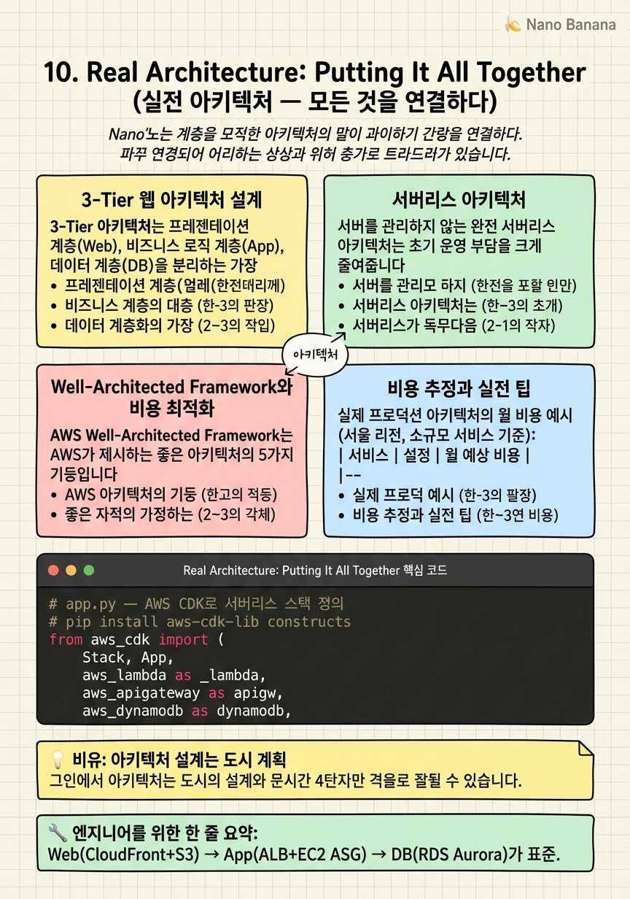

Real Architecture: Putting It All Together

🎯 학습 목표
- 프로덕션 수준의 3-Tier 아키텍처를 설계할 수 있다
- Lambda + API Gateway + DynamoDB 서버리스 아키텍처를 이해한다
- AWS 비용을 AWS Pricing Calculator로 추정할 수 있다
- Well-Architected Framework 5가지 기둥을 설명할 수 있다
- CloudFormation 또는 CDK로 인프라를 코드로 관리하는 개념을 이해한다
드디어 마지막 챕터입니다. 지금까지 개별 서비스를 하나씩 배웠다면, 이번 챕터에서는 모든 서비스를 실제 아키텍처로 조합해봅니다. 이 장을 마치면 AWS에서 프로덕션 수준의 웹 애플리케이션을 독립적으로 설계할 수 있는 기반이 갖춰집니다.
실제 서비스를 설계할 때 아키텍처는 비즈니스 요구사항에 따라 달라집니다. 스타트업의 MVP는 단순해야 하고, 대기업의 프로덕션 시스템은 고가용성과 보안이 최우선입니다. 이 챕터에서는 두 가지 대표적인 아키텍처 패턴을 살펴봅니다:
1. 전통적 3-Tier 웹 아키텍처 (프론트엔드 + 앱 서버 + DB) 2. 서버리스 아키텍처 (CloudFront + API Gateway + Lambda + DynamoDB)
AWS는 이러한 설계를 평가하는 프레임워크로 Well-Architected Framework를 제공합니다. 5가지 기둥(운영 우수성·보안·신뢰성·성능 효율성·비용 최적화)을 통해 아키텍처를 체계적으로 평가합니다.
핵심 내용
3-Tier 웹 아키텍처 설계
3-Tier 아키텍처는 프레젠테이션 계층(Web), 비즈니스 로직 계층(App), 데이터 계층(DB)을 분리하는 가장 보편적인 웹 아키텍처 패턴입니다.
완성된 아키텍처 구성:
Web Tier (프레젠테이션):
- Route 53 → CloudFront → S3 (정적 파일: HTML/CSS/JS) - 사용자는 HTTPS로 접근, ACM 인증서 적용
App Tier (비즈니스 로직):
- Route 53 → ALB (인터넷 페이싱, Public Subnet) - ALB → EC2 Auto Scaling Group (Private Subnet, 최소 2개 AZ) - EC2에는 IAM Role 부착 (S3·RDS 접근)
DB Tier (데이터):
- RDS Aurora PostgreSQL (Multi-AZ, Private Subnet) - ElastiCache Redis (세션·캐싱, Private Subnet) - S3 (미디어 파일, 정적 에셋)
네트워크 구성:
- VPC: 10.0.0.0/16 (서울 리전)
- AZ-a: Public 10.0.1.0/24, Private App 10.0.11.0/24, Private DB 10.0.21.0/24
- AZ-b: Public 10.0.2.0/24, Private App 10.0.12.0/24, Private DB 10.0.22.0/24
- NAT Gateway: 각 AZ의 Public Subnet (Private EC2의 외부 접근용)
보안 설계:
- ALB 보안 그룹: 80·443 포트만 인터넷 허용 - EC2 보안 그룹: ALB 보안 그룹에서만 80 허용, 외부 직접 접근 차단 - RDS 보안 그룹: EC2 보안 그룹에서만 5432 허용 - 모든 계층 간 최소 권한 원칙 적용
서버리스 아키텍처
서버를 관리하지 않는 완전 서버리스 아키텍처는 초기 운영 부담을 크게 줄여줍니다. 특히 스타트업이나 트래픽이 불규칙한 서비스에 적합합니다.
서버리스 REST API 아키텍처:
`
클라이언트 → CloudFront → API Gateway → Lambda → DynamoDB
(캐싱/CDN) (HTTP 라우팅) (비즈니스 로직) (NoSQL DB)
`
각 컴포넌트 역할: - CloudFront: API 응답 캐싱 (GET 요청), DDoS 방어, HTTPS - API Gateway: HTTP 메서드별 Lambda 연결, 요청 검증, 인증(Cognito/JWT) - Lambda: 실제 비즈니스 로직 실행 (Node.js·Python·Go) - DynamoDB: 서버리스 NoSQL DB, 초당 수백만 요청 처리 가능 - Cognito: 사용자 인증·인가 (JWT 토큰 발급) - S3: 파일 저장, 정적 웹 호스팅
서버리스 vs 전통적 아키텍처 비교:
| 관점 | 전통적 3-Tier | 서버리스 |
|---|---|---|
| 초기 비용 | 높음 (EC2 항상 실행) | 낮음 (실행 시만) |
| 트래픽 폭증 | 수동 또는 ASG | 자동 (무제한) |
| 레이턴시 | 일정 | 콜드 스타트 이슈 |
| 상태 관리 | 쉬움 | 어려움 (Stateless) |
| 복잡도 | 중간 | 높음 (여러 서비스) |
| 운영 부담 | 있음 | 낮음 |
DynamoDB 선택 기준: 스키마가 유연하거나, 초고속 읽기/쓰기가 필요하거나, 트래픽이 예측 불가능할 때 선택합니다. 반면 복잡한 JOIN 쿼리나 강한 일관성이 필요하면 RDS를 선택합니다.
Well-Architected Framework와 비용 최적화
AWS Well-Architected Framework는 AWS가 제시하는 좋은 아키텍처의 5가지 기둥입니다.
1. 운영 우수성 (Operational Excellence) - IaC(CloudFormation, CDK)로 인프라 코드화 - CloudWatch로 메트릭·알림 설정 - 장애 대응 런북(Runbook) 문서화
2. 보안 (Security) - 최소 권한 IAM 정책 적용 - 모든 데이터 암호화 (전송 중: TLS, 저장 시: KMS) - VPC로 네트워크 격리, Security Group 최소화
3. 신뢰성 (Reliability) - Multi-AZ 배포로 단일 장애점 제거 - 자동 복구 메커니즘 (ASG, RDS Multi-AZ) - 재해 복구 계획 (DR) 수립
4. 성능 효율성 (Performance Efficiency) - 올바른 인스턴스 타입·DB 선택 - CloudFront로 엣지 캐싱 - Auto Scaling으로 적시 적량 자원 사용
5. 비용 최적화 (Cost Optimization) - Reserved Instance·Savings Plans 활용 - S3 Lifecycle Policy로 스토리지 클래스 자동 전환 - AWS Cost Explorer로 비용 분석 및 이상 감지
인프라를 코드로 관리하기 (IaC):
- CloudFormation: AWS 네이티브 IaC. YAML/JSON 템플릿으로 AWS 리소스 정의 - AWS CDK: Python·TypeScript로 CloudFormation 템플릿을 생성 - Terraform: 멀티 클라우드 지원. AWS 외에도 사용 가능
IaC를 사용하면 인프라를 Git으로 버전 관리하고, 코드 리뷰를 통해 변경 사항을 검토하고, 동일한 환경(개발·스테이징·프로덕션)을 코드로 재현할 수 있습니다.
비용 추정과 실전 팁
실제 프로덕션 아키텍처의 월 비용 예시 (서울 리전, 소규모 서비스 기준):
| 서비스 | 설정 | 월 예상 비용 |
|---|---|---|
| EC2 (t3.small x 2) | 24시간 On-Demand | ~$30 |
| RDS Aurora (db.t3.medium) | Single-AZ | ~$60 |
| ALB | 750 LCU 이하 | ~$20 |
| NAT Gateway | 100GB 전송 | ~$20 |
| S3 | 100GB + 요청 | ~$3 |
| CloudFront | 1TB 전송 | ~$85 |
| Route 53 | 도메인 + Hosted Zone | ~$2 |
| 합계 | ~$220/월 |
비용 절약 팁:
1. EC2를 Reserved Instance (1년 약정)로 전환하면 약 30~40% 절약
2. 개발 환경은 업무 시간(오전 9시~오후 6시)에만 실행 (aws ec2 start-instances 스케줄)
3. CloudWatch Alarm + SNS로 예산 초과 즉시 알림
4. 사용하지 않는 리소스 자동 감지: AWS Trusted Advisor, Cost Anomaly Detection
AWS Well-Architected Tool: AWS 콘솔에서 무료로 아키텍처를 5가지 기둥으로 자가 진단할 수 있는 도구. 개선 권고사항을 목록으로 제공합니다.
💡 비유로 이해하기
AWS 아키텍처 설계는 도시 계획과 같습니다. 아무것도 없는 땅에서 사람들이 편안하게 살 수 있는 도시를 설계해야 합니다.
VPC는 도시 경계입니다. 외부와 격리된 내 도시만의 공간. Public Subnet은 상업 지구로 외부인도 드나들 수 있고, Private Subnet은 주거·산업 지구로 외부인은 들어올 수 없습니다. Internet Gateway는 도시 정문이고, NAT Gateway는 주민이 외부로 나갈 수 있는 후문입니다.
ALB는 대형 쇼핑몰 안내 데스크로, 고객을 적절한 매장(EC2)으로 안내합니다. Auto Scaling은 성수기엔 직원을 더 채용하고 비수기엔 줄이는 HR 팀입니다. CloudFront는 도시 각지에 있는 편의점(엣지 로케이션)으로, 멀리서 올 필요 없이 가까운 곳에서 필요한 것(콘텐츠)을 제공합니다. RDS는 도시의 물 저장 탱크(DB)로 모든 주민이 공유하며, 장애에 대비한 예비 탱크(Multi-AZ)도 함께 있습니다.
💻 코드 예시
AWS CDK(Cloud Development Kit)로 간단한 서버리스 API 아키텍처 (API Gateway + Lambda + DynamoDB)를 코드로 정의하는 예제입니다. CDK는 Python으로 AWS 인프라를 정의하고 CloudFormation으로 배포합니다.
# app.py — AWS CDK로 서버리스 스택 정의
# pip install aws-cdk-lib constructs
from aws_cdk import (
Stack, App,
aws_lambda as _lambda,
aws_apigateway as apigw,
aws_dynamodb as dynamodb,
aws_iam as iam,
RemovalPolicy
)
from constructs import Construct
class ServerlessApiStack(Stack):
def __init__(self, scope: Construct, id: str, **kwargs):
super().__init__(scope, id, **kwargs)
# DynamoDB 테이블 생성
table = dynamodb.Table(
self, 'UsersTable',
partition_key=dynamodb.Attribute(
name='userId',
type=dynamodb.AttributeType.STRING
),
billing_mode=dynamodb.BillingMode.PAY_PER_REQUEST, # 서버리스 과금
removal_policy=RemovalPolicy.DESTROY # 스택 삭제 시 테이블도 삭제
)
# Lambda 함수 정의
api_fn = _lambda.Function(
self, 'ApiHandler',
runtime=_lambda.Runtime.PYTHON_3_12,
handler='index.handler',
code=_lambda.Code.from_inline("""
import json, boto3, os
db = boto3.resource('dynamodb').Table(os.environ['TABLE_NAME'])
def handler(event, ctx):
if event['httpMethod'] == 'GET':
r = db.get_item(Key={'userId': event['pathParameters']['id']})
return {'statusCode': 200, 'body': json.dumps(r.get('Item', {}))}
"""),
environment={'TABLE_NAME': table.table_name}
)
# Lambda에 DynamoDB 읽기 권한 부여
table.grant_read_data(api_fn)
# API Gateway 생성 및 Lambda 연결
api = apigw.RestApi(self, 'UsersApi', rest_api_name='Users Service')
users = api.root.add_resource('users')
user = users.add_resource('{id}')
user.add_method('GET', apigw.LambdaIntegration(api_fn))
app = App()
ServerlessApiStack(app, 'ServerlessApiStack', env={'region': 'ap-northeast-2'})
app.synth()CDK는 파이썬 클래스로 인프라를 정의합니다. table.grant_read_data(api_fn)는 Lambda에 정확히 필요한 DynamoDB 읽기 권한만 자동으로 IAM Policy를 생성해 부여합니다 (최소 권한 원칙). cdk deploy 명령 하나로 DynamoDB·Lambda·API Gateway가 모두 생성됩니다. cdk destroy로 모두 삭제됩니다. CDK는 CloudFormation 템플릿을 자동 생성하므로 YAML/JSON을 직접 쓸 필요가 없습니다.
🏭 현업에서의 평가
✅ 시니어가 보는 것
- 요구사항에 맞는 서비스를 선택하고 그 이유를 설명하는가
- 단일 장애점(SPOF)을 식별하고 제거하는 설계를 하는가
- 비용 대비 효율성과 운영 복잡도 간의 트레이드오프를 인식하는가
⚠️ 레드 플래그
- 비용·보안·가용성 중 하나만 고려하고 나머지를 무시함
- 아키텍처 다이어그램을 그리지 못하거나 각 서비스의 역할을 설명하지 못함
- IaC를 사용하지 않고 콘솔에서 수동으로 모든 것을 설정
🎤 예상 인터뷰 질문
- DAU 10만 명의 소셜 미디어 앱 백엔드를 AWS로 설계해 주세요. (제약 조건 확인부터 시작)
- 기존 온프레미스 MySQL 서버를 AWS로 마이그레이션하는 전략을 설명해 주세요.
- 서비스 다운타임을 최소화하면서 레거시 모놀리스를 마이크로서비스로 전환하는 방법은?
✨ 핵심 요약
3-Tier 패턴이 기본
Web(CloudFront+S3) → App(ALB+EC2 ASG) → DB(RDS Aurora)가 표준.
서버리스는 운영 부담 최소화
API GW + Lambda + DynamoDB로 서버 없이 API 운영 가능.
모든 것을 코드로
CDK·Terraform으로 인프라를 Git 관리. 재현 가능성과 협업 필수.
Well-Architected 5가지 기둥
운영우수성·보안·신뢰성·성능·비용. 모든 설계 결정의 기준.
비용은 처음부터 계획
AWS Pricing Calculator로 사전 추정. Reserved로 30~40% 절감.
단일 장애점을 찾아라
모든 아키텍처에서 SPOF를 찾고 Multi-AZ로 제거한다.
보안은 레이어로
VPC → Security Group → IAM → 암호화. 여러 레이어로 방어.
SA 자격증으로 체계화
AWS Solutions Architect Associate 시험이 이 모든 내용을 커버한다.